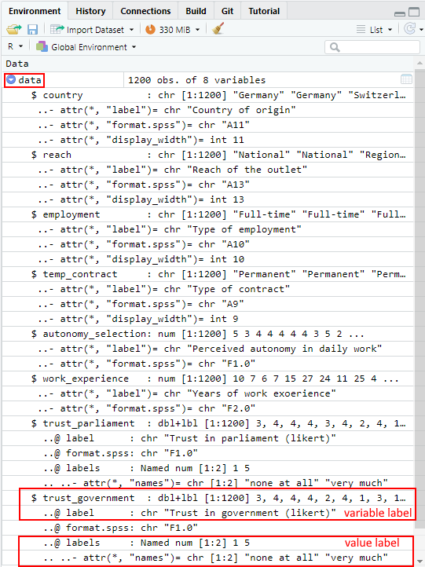

3 Tutorial: Working with data (files)
After working through Tutorial 3, you’ll…
- understand how to import data
- know how to select variables in data frames
- know how to access values in data frames
3.1 Defining your working directory
In most cases, you don’t want to manually enter all your values into R and combine them with the c() function. Instead, you’ll likely want to import data files that you already have on your personal computer or drive. You’ve already learned how to import data using the R context menu, but there is a more efficient and reproducible way to do this. Therefore, the first step to importing your data into R is usually to define your working directory.
Your working directory is the folder from which data can be imported into R or to which you can export and save data created with R.
Create a folder that you want to use as your working directory for this tutorial (or use an existing one). For this example, I’ll create a folder called “IPR” (short for In Public Repository, since this is a public tutorial). Go to that folder and copy the folder path to it:
| Image: Working Directory on Windows |
 |
| Image: Copy Working Directory on Windows |
 |
On Mac, you go to a document in your folder and right click on it. An options menu opens and you can copy the folder path:
| Image: Copy Working Directory on MAC |
 |
Now you know where this working directory is located - but R should know too! Telling R from which folder to import data or where to export data is called setting your working directory. We use a function called setwd() (you guessed it right: short for “set working directory”) which allows us to do exactly that.
Important: The way this working directory is set differs between Windows- and Mac-Operating Systems.
Windows: The dashes need to be pointing towards the right direction (if you simply copy the path to the folder, you may need to replace these signs “\” with “/”)
setwd("C:/Users/LaraK/Documents/IPR")Mac: You may need to add a “/” at the beginning like so:
setwd("/Users/LaraK/Documents/IPR")NOTE: Setting your entire desktop as the working directory rarely works. It’s better to create a new folder on your desktop and set that folder as your working directory.
If you have forgotten where you set your current working directory, you can also ask R about the path of your current working directory with getwd():
getwd()## [1] "C:/Users/LaraK/Documents/IPR"3.1.1 Optional: Setting the working directory on a remote desktop
The LMU Munich provides you with remote desktop access to the PCs in the local CIP-Pools. If you want to use your remote desktop to run R & RStudio, you can follow this link to log into the remote desktop. This is a great fix if – for whatever reason – you can’t get R(Studio) installed on your machine and need a quick solution!
Once you have logged in to the remote desktop, you can open RStudio and set the working directory (and import data) just like it is described in this tutorial (see next image).
| Image: Working Directory (& Data Import) on a Remote Desktop |
 |
The drawback: Since Windows does not allow RStudio to save script files without permission, you can’t save script files on the remote desktop. You can solve this with a workaround:
- Paste your script into a text file before closing RStudio. E.g., WordPad is pre-installed. Save this file as .R.
- When you want to load your script in RStudio, right click on the .R file and choose “open with RStudio”.
| Image: Saving a Script File on a Remote Desktop |
 |
3.2 Import data from your working directory
After setting the working directory, you need to transfer the data file that you want to work with to that folder (here: the “IPR” folder). To do this, download the “WoJ.csv” file from LRZ Sync & Share using this link. The dataset is a subset of the Worlds of Journalism 2012-16 study containing survey data from 1,200 journalists from five European countries. Put the downloaded data file in the folder that you just set up as your working directory (here: the “IPR” folder).
The data file WoJ.csv is structured as follows:
- Each row contains the survey answers of a single journalist.
- Each column contains the values given by all journalists for a single variable.
The variables included here are:
- country: the home country of the journalist (e.g. Germany, Switzerland)
- reach: the reach of the outlet that the journalist is working for (Transnational, National, Regional, Local)
- employment: the journalist’s current employment status (Full-time, Part-time, Freelancer)
- temp_contract: the journalist’s type of contract (Permenent, Temporary)
- autonomy_selection: how much autonomy the journalist indicates to have in his/her daily work (from 1 = none at all to 5 = very much)
- work_experience: in years
- trust_parliament & trust_government: how much trust the journalist indicates to have (from 1 = none at all to 5 = very much)
We will read in the file using read.csv(). We specify the file path in quotation marks to indicate where to find the data file. However, if you have already set your working directory to the folder where the file is located, you don’t need to specify the path. Additionally, we use the argument header = TRUE to let R know that the first row contains variable names. Finally, we assign the data file to a source object named survey (but you could choose a different name for your source object like WoJ or data). The data is now stored in this object.
survey <- read.csv("WoJ.csv", header = TRUE)survey[1:20,]## country reach employment temp_contract autonomy_selection
## 1 Germany National Full-time Permanent 5
## 2 Germany National Full-time Permanent 3
## 3 Switzerland Regional Full-time Permanent 4
## 4 Switzerland Local Part-time Permanent 4
## 5 Austria National Part-time Permanent 4
## 6 Switzerland Local Freelancer <NA> 4
## 7 Germany Local Full-time Permanent 4
## 8 Denmark National Full-time Permanent 3
## 9 Switzerland Local Full-time Permanent 5
## 10 Denmark National Full-time Permanent 2
## 11 Austria Local Full-time Permanent 5
## 12 Denmark National Freelancer <NA> 4
## 13 UK Regional Full-time Permanent 3
## 14 UK Transnational Full-time Permanent 4
## 15 Austria National Full-time Permanent 3
## 16 Denmark National Freelancer <NA> 5
## 17 UK Transnational Full-time Permanent 4
## 18 Switzerland Regional Full-time Permanent 4
## 19 Switzerland National Part-time Permanent 4
## 20 Denmark National Full-time Permanent 4
## work_experience trust_parliament trust_government
## 1 10 3 3
## 2 7 4 4
## 3 6 4 4
## 4 7 4 4
## 5 15 3 2
## 6 27 4 4
## 7 24 2 1
## 8 11 4 3
## 9 25 1 1
## 10 4 3 3
## 11 8 3 2
## 12 25 3 3
## 13 10 3 2
## 14 5 3 2
## 15 23 3 2
## 16 25 4 2
## 17 11 2 3
## 18 8 3 3
## 19 32 3 4
## 20 21 3 3NOTE: While read.csv() reads in comma-separated values, read.csv2() reads in values that are separated by semicolons.
To make the dataset a little more tangible, we will give the journalists 40 different fictitious names and repeat them 30 times over our 1200 journalists. The names will be saved into a new column in the dataset, which we will call name. Please run this code to add names to your data:
survey$name <- rep(c("Rosalie", "Laurens", "Florian", "Chantal", "Cynthia", "Paul", "Jonas",
"Tanja", "David", "Ferdinand", "Caroline", "Charline", "Sev", "Theodor",
"Helke", "Joshua", "Jona", "Konrad", "Lennart", "Luise", "Wiebke", "Marie", "Rosa",
"Alma", "Ida", "Jean", "Leonie", "Tom", "Maximilian", "Viktor", "Marianne", "Velma", "Carl",
"Wolf", "Merten", "Tong-Tong", "Sal", "Joe", "Alex", "Robin"), 30)3.3 Subsetting variables / columns in data frames
In the Tutorial: Using R as a calculator, your variables were “floating” in your workspace or environment. They were not stored in a container, so you could call them by simply writing their name in the console. When you import data files into R, all variables in that dataset are stored in a “container,” which is your source object. These containers for variables are called data frames in R.
Variables that are part of a data frame can be accessed by their name, but we need to specify the data frame AND the variable name and combine them with the access operator: $. This takes the form of:
dataframe$variablename
# the first part is the container name, i.e. data frame
# this is followed by the access operator $
# finally, you call the variable by nameFor instance, we could retrieve the variable / column “name” in our survey data frame by simply using its variable name: We specify the object we want to access, the data frame survey and then retrieve the column name via the operator $:
survey$name## [1] "Rosalie" "Laurens" "Florian" "Chantal" "Cynthia"
## [6] "Paul" "Jonas" "Tanja" "David" "Ferdinand"
## [11] "Caroline" "Charline" "Sev" "Theodor" "Helke"
## [16] "Joshua" "Jona" "Konrad" "Lennart" "Luise"
## [21] "Wiebke" "Marie" "Rosa" "Alma" "Ida"
## [26] "Jean" "Leonie" "Tom" "Maximilian" "Viktor"
## [31] "Marianne" "Velma" "Carl" "Wolf" "Merten"
## [36] "Tong-Tong" "Sal" "Joe" "Alex" "Robin"
## [41] "Rosalie" "Laurens" "Florian" "Chantal" "Cynthia"
## [46] "Paul" "Jonas" "Tanja" "David" "Ferdinand"
## [51] "Caroline" "Charline" "Sev" "Theodor" "Helke"
## [56] "Joshua" "Jona" "Konrad" "Lennart" "Luise"
## [61] "Wiebke" "Marie" "Rosa" "Alma" "Ida"
## [66] "Jean" "Leonie" "Tom" "Maximilian" "Viktor"
## [71] "Marianne" "Velma" "Carl" "Wolf" "Merten"
## [76] "Tong-Tong" "Sal" "Joe" "Alex" "Robin"
## [81] "Rosalie" "Laurens" "Florian" "Chantal" "Cynthia"
## [86] "Paul" "Jonas" "Tanja" "David" "Ferdinand"
## [91] "Caroline" "Charline" "Sev" "Theodor" "Helke"
## [96] "Joshua" "Jona" "Konrad" "Lennart" "Luise"
## [101] "Wiebke" "Marie" "Rosa" "Alma" "Ida"
## [106] "Jean" "Leonie" "Tom" "Maximilian" "Viktor"
## [111] "Marianne" "Velma" "Carl" "Wolf" "Merten"
## [116] "Tong-Tong" "Sal" "Joe" "Alex" "Robin"
## [121] "Rosalie" "Laurens" "Florian" "Chantal" "Cynthia"
## [126] "Paul" "Jonas" "Tanja" "David" "Ferdinand"
## [131] "Caroline" "Charline" "Sev" "Theodor" "Helke"
## [136] "Joshua" "Jona" "Konrad" "Lennart" "Luise"
## [141] "Wiebke" "Marie" "Rosa" "Alma" "Ida"
## [146] "Jean" "Leonie" "Tom" "Maximilian" "Viktor"
## [151] "Marianne" "Velma" "Carl" "Wolf" "Merten"
## [156] "Tong-Tong" "Sal" "Joe" "Alex" "Robin"
## [161] "Rosalie" "Laurens" "Florian" "Chantal" "Cynthia"
## [166] "Paul" "Jonas" "Tanja" "David" "Ferdinand"
## [171] "Caroline" "Charline" "Sev" "Theodor" "Helke"
## [176] "Joshua" "Jona" "Konrad" "Lennart" "Luise"
## [181] "Wiebke" "Marie" "Rosa" "Alma" "Ida"
## [186] "Jean" "Leonie" "Tom" "Maximilian" "Viktor"
## [191] "Marianne" "Velma" "Carl" "Wolf" "Merten"
## [196] "Tong-Tong" "Sal" "Joe" "Alex" "Robin"
## [201] "Rosalie" "Laurens" "Florian" "Chantal" "Cynthia"
## [206] "Paul" "Jonas" "Tanja" "David" "Ferdinand"
## [211] "Caroline" "Charline" "Sev" "Theodor" "Helke"
## [216] "Joshua" "Jona" "Konrad" "Lennart" "Luise"
## [221] "Wiebke" "Marie" "Rosa" "Alma" "Ida"
## [226] "Jean" "Leonie" "Tom" "Maximilian" "Viktor"
## [231] "Marianne" "Velma" "Carl" "Wolf" "Merten"
## [236] "Tong-Tong" "Sal" "Joe" "Alex" "Robin"
## [241] "Rosalie" "Laurens" "Florian" "Chantal" "Cynthia"
## [246] "Paul" "Jonas" "Tanja" "David" "Ferdinand"
## [251] "Caroline" "Charline" "Sev" "Theodor" "Helke"
## [256] "Joshua" "Jona" "Konrad" "Lennart" "Luise"
## [261] "Wiebke" "Marie" "Rosa" "Alma" "Ida"
## [266] "Jean" "Leonie" "Tom" "Maximilian" "Viktor"
## [271] "Marianne" "Velma" "Carl" "Wolf" "Merten"
## [276] "Tong-Tong" "Sal" "Joe" "Alex" "Robin"
## [281] "Rosalie" "Laurens" "Florian" "Chantal" "Cynthia"
## [286] "Paul" "Jonas" "Tanja" "David" "Ferdinand"
## [291] "Caroline" "Charline" "Sev" "Theodor" "Helke"
## [296] "Joshua" "Jona" "Konrad" "Lennart" "Luise"
## [301] "Wiebke" "Marie" "Rosa" "Alma" "Ida"
## [306] "Jean" "Leonie" "Tom" "Maximilian" "Viktor"
## [311] "Marianne" "Velma" "Carl" "Wolf" "Merten"
## [316] "Tong-Tong" "Sal" "Joe" "Alex" "Robin"
## [321] "Rosalie" "Laurens" "Florian" "Chantal" "Cynthia"
## [326] "Paul" "Jonas" "Tanja" "David" "Ferdinand"
## [331] "Caroline" "Charline" "Sev" "Theodor" "Helke"
## [336] "Joshua" "Jona" "Konrad" "Lennart" "Luise"
## [341] "Wiebke" "Marie" "Rosa" "Alma" "Ida"
## [346] "Jean" "Leonie" "Tom" "Maximilian" "Viktor"
## [351] "Marianne" "Velma" "Carl" "Wolf" "Merten"
## [356] "Tong-Tong" "Sal" "Joe" "Alex" "Robin"
## [361] "Rosalie" "Laurens" "Florian" "Chantal" "Cynthia"
## [366] "Paul" "Jonas" "Tanja" "David" "Ferdinand"
## [371] "Caroline" "Charline" "Sev" "Theodor" "Helke"
## [376] "Joshua" "Jona" "Konrad" "Lennart" "Luise"
## [381] "Wiebke" "Marie" "Rosa" "Alma" "Ida"
## [386] "Jean" "Leonie" "Tom" "Maximilian" "Viktor"
## [391] "Marianne" "Velma" "Carl" "Wolf" "Merten"
## [396] "Tong-Tong" "Sal" "Joe" "Alex" "Robin"
## [401] "Rosalie" "Laurens" "Florian" "Chantal" "Cynthia"
## [406] "Paul" "Jonas" "Tanja" "David" "Ferdinand"
## [411] "Caroline" "Charline" "Sev" "Theodor" "Helke"
## [416] "Joshua" "Jona" "Konrad" "Lennart" "Luise"
## [421] "Wiebke" "Marie" "Rosa" "Alma" "Ida"
## [426] "Jean" "Leonie" "Tom" "Maximilian" "Viktor"
## [431] "Marianne" "Velma" "Carl" "Wolf" "Merten"
## [436] "Tong-Tong" "Sal" "Joe" "Alex" "Robin"
## [441] "Rosalie" "Laurens" "Florian" "Chantal" "Cynthia"
## [446] "Paul" "Jonas" "Tanja" "David" "Ferdinand"
## [451] "Caroline" "Charline" "Sev" "Theodor" "Helke"
## [456] "Joshua" "Jona" "Konrad" "Lennart" "Luise"
## [461] "Wiebke" "Marie" "Rosa" "Alma" "Ida"
## [466] "Jean" "Leonie" "Tom" "Maximilian" "Viktor"
## [471] "Marianne" "Velma" "Carl" "Wolf" "Merten"
## [476] "Tong-Tong" "Sal" "Joe" "Alex" "Robin"
## [481] "Rosalie" "Laurens" "Florian" "Chantal" "Cynthia"
## [486] "Paul" "Jonas" "Tanja" "David" "Ferdinand"
## [491] "Caroline" "Charline" "Sev" "Theodor" "Helke"
## [496] "Joshua" "Jona" "Konrad" "Lennart" "Luise"
## [501] "Wiebke" "Marie" "Rosa" "Alma" "Ida"
## [506] "Jean" "Leonie" "Tom" "Maximilian" "Viktor"
## [511] "Marianne" "Velma" "Carl" "Wolf" "Merten"
## [516] "Tong-Tong" "Sal" "Joe" "Alex" "Robin"
## [521] "Rosalie" "Laurens" "Florian" "Chantal" "Cynthia"
## [526] "Paul" "Jonas" "Tanja" "David" "Ferdinand"
## [531] "Caroline" "Charline" "Sev" "Theodor" "Helke"
## [536] "Joshua" "Jona" "Konrad" "Lennart" "Luise"
## [541] "Wiebke" "Marie" "Rosa" "Alma" "Ida"
## [546] "Jean" "Leonie" "Tom" "Maximilian" "Viktor"
## [551] "Marianne" "Velma" "Carl" "Wolf" "Merten"
## [556] "Tong-Tong" "Sal" "Joe" "Alex" "Robin"
## [561] "Rosalie" "Laurens" "Florian" "Chantal" "Cynthia"
## [566] "Paul" "Jonas" "Tanja" "David" "Ferdinand"
## [571] "Caroline" "Charline" "Sev" "Theodor" "Helke"
## [576] "Joshua" "Jona" "Konrad" "Lennart" "Luise"
## [581] "Wiebke" "Marie" "Rosa" "Alma" "Ida"
## [586] "Jean" "Leonie" "Tom" "Maximilian" "Viktor"
## [591] "Marianne" "Velma" "Carl" "Wolf" "Merten"
## [596] "Tong-Tong" "Sal" "Joe" "Alex" "Robin"
## [601] "Rosalie" "Laurens" "Florian" "Chantal" "Cynthia"
## [606] "Paul" "Jonas" "Tanja" "David" "Ferdinand"
## [611] "Caroline" "Charline" "Sev" "Theodor" "Helke"
## [616] "Joshua" "Jona" "Konrad" "Lennart" "Luise"
## [621] "Wiebke" "Marie" "Rosa" "Alma" "Ida"
## [626] "Jean" "Leonie" "Tom" "Maximilian" "Viktor"
## [631] "Marianne" "Velma" "Carl" "Wolf" "Merten"
## [636] "Tong-Tong" "Sal" "Joe" "Alex" "Robin"
## [641] "Rosalie" "Laurens" "Florian" "Chantal" "Cynthia"
## [646] "Paul" "Jonas" "Tanja" "David" "Ferdinand"
## [651] "Caroline" "Charline" "Sev" "Theodor" "Helke"
## [656] "Joshua" "Jona" "Konrad" "Lennart" "Luise"
## [661] "Wiebke" "Marie" "Rosa" "Alma" "Ida"
## [666] "Jean" "Leonie" "Tom" "Maximilian" "Viktor"
## [671] "Marianne" "Velma" "Carl" "Wolf" "Merten"
## [676] "Tong-Tong" "Sal" "Joe" "Alex" "Robin"
## [681] "Rosalie" "Laurens" "Florian" "Chantal" "Cynthia"
## [686] "Paul" "Jonas" "Tanja" "David" "Ferdinand"
## [691] "Caroline" "Charline" "Sev" "Theodor" "Helke"
## [696] "Joshua" "Jona" "Konrad" "Lennart" "Luise"
## [701] "Wiebke" "Marie" "Rosa" "Alma" "Ida"
## [706] "Jean" "Leonie" "Tom" "Maximilian" "Viktor"
## [711] "Marianne" "Velma" "Carl" "Wolf" "Merten"
## [716] "Tong-Tong" "Sal" "Joe" "Alex" "Robin"
## [721] "Rosalie" "Laurens" "Florian" "Chantal" "Cynthia"
## [726] "Paul" "Jonas" "Tanja" "David" "Ferdinand"
## [731] "Caroline" "Charline" "Sev" "Theodor" "Helke"
## [736] "Joshua" "Jona" "Konrad" "Lennart" "Luise"
## [741] "Wiebke" "Marie" "Rosa" "Alma" "Ida"
## [746] "Jean" "Leonie" "Tom" "Maximilian" "Viktor"
## [751] "Marianne" "Velma" "Carl" "Wolf" "Merten"
## [756] "Tong-Tong" "Sal" "Joe" "Alex" "Robin"
## [761] "Rosalie" "Laurens" "Florian" "Chantal" "Cynthia"
## [766] "Paul" "Jonas" "Tanja" "David" "Ferdinand"
## [771] "Caroline" "Charline" "Sev" "Theodor" "Helke"
## [776] "Joshua" "Jona" "Konrad" "Lennart" "Luise"
## [781] "Wiebke" "Marie" "Rosa" "Alma" "Ida"
## [786] "Jean" "Leonie" "Tom" "Maximilian" "Viktor"
## [791] "Marianne" "Velma" "Carl" "Wolf" "Merten"
## [796] "Tong-Tong" "Sal" "Joe" "Alex" "Robin"
## [801] "Rosalie" "Laurens" "Florian" "Chantal" "Cynthia"
## [806] "Paul" "Jonas" "Tanja" "David" "Ferdinand"
## [811] "Caroline" "Charline" "Sev" "Theodor" "Helke"
## [816] "Joshua" "Jona" "Konrad" "Lennart" "Luise"
## [821] "Wiebke" "Marie" "Rosa" "Alma" "Ida"
## [826] "Jean" "Leonie" "Tom" "Maximilian" "Viktor"
## [831] "Marianne" "Velma" "Carl" "Wolf" "Merten"
## [836] "Tong-Tong" "Sal" "Joe" "Alex" "Robin"
## [841] "Rosalie" "Laurens" "Florian" "Chantal" "Cynthia"
## [846] "Paul" "Jonas" "Tanja" "David" "Ferdinand"
## [851] "Caroline" "Charline" "Sev" "Theodor" "Helke"
## [856] "Joshua" "Jona" "Konrad" "Lennart" "Luise"
## [861] "Wiebke" "Marie" "Rosa" "Alma" "Ida"
## [866] "Jean" "Leonie" "Tom" "Maximilian" "Viktor"
## [871] "Marianne" "Velma" "Carl" "Wolf" "Merten"
## [876] "Tong-Tong" "Sal" "Joe" "Alex" "Robin"
## [881] "Rosalie" "Laurens" "Florian" "Chantal" "Cynthia"
## [886] "Paul" "Jonas" "Tanja" "David" "Ferdinand"
## [891] "Caroline" "Charline" "Sev" "Theodor" "Helke"
## [896] "Joshua" "Jona" "Konrad" "Lennart" "Luise"
## [901] "Wiebke" "Marie" "Rosa" "Alma" "Ida"
## [906] "Jean" "Leonie" "Tom" "Maximilian" "Viktor"
## [911] "Marianne" "Velma" "Carl" "Wolf" "Merten"
## [916] "Tong-Tong" "Sal" "Joe" "Alex" "Robin"
## [921] "Rosalie" "Laurens" "Florian" "Chantal" "Cynthia"
## [926] "Paul" "Jonas" "Tanja" "David" "Ferdinand"
## [931] "Caroline" "Charline" "Sev" "Theodor" "Helke"
## [936] "Joshua" "Jona" "Konrad" "Lennart" "Luise"
## [941] "Wiebke" "Marie" "Rosa" "Alma" "Ida"
## [946] "Jean" "Leonie" "Tom" "Maximilian" "Viktor"
## [951] "Marianne" "Velma" "Carl" "Wolf" "Merten"
## [956] "Tong-Tong" "Sal" "Joe" "Alex" "Robin"
## [961] "Rosalie" "Laurens" "Florian" "Chantal" "Cynthia"
## [966] "Paul" "Jonas" "Tanja" "David" "Ferdinand"
## [971] "Caroline" "Charline" "Sev" "Theodor" "Helke"
## [976] "Joshua" "Jona" "Konrad" "Lennart" "Luise"
## [981] "Wiebke" "Marie" "Rosa" "Alma" "Ida"
## [986] "Jean" "Leonie" "Tom" "Maximilian" "Viktor"
## [991] "Marianne" "Velma" "Carl" "Wolf" "Merten"
## [996] "Tong-Tong" "Sal" "Joe" "Alex" "Robin"
## [1001] "Rosalie" "Laurens" "Florian" "Chantal" "Cynthia"
## [1006] "Paul" "Jonas" "Tanja" "David" "Ferdinand"
## [1011] "Caroline" "Charline" "Sev" "Theodor" "Helke"
## [1016] "Joshua" "Jona" "Konrad" "Lennart" "Luise"
## [1021] "Wiebke" "Marie" "Rosa" "Alma" "Ida"
## [1026] "Jean" "Leonie" "Tom" "Maximilian" "Viktor"
## [1031] "Marianne" "Velma" "Carl" "Wolf" "Merten"
## [1036] "Tong-Tong" "Sal" "Joe" "Alex" "Robin"
## [1041] "Rosalie" "Laurens" "Florian" "Chantal" "Cynthia"
## [1046] "Paul" "Jonas" "Tanja" "David" "Ferdinand"
## [1051] "Caroline" "Charline" "Sev" "Theodor" "Helke"
## [1056] "Joshua" "Jona" "Konrad" "Lennart" "Luise"
## [1061] "Wiebke" "Marie" "Rosa" "Alma" "Ida"
## [1066] "Jean" "Leonie" "Tom" "Maximilian" "Viktor"
## [1071] "Marianne" "Velma" "Carl" "Wolf" "Merten"
## [1076] "Tong-Tong" "Sal" "Joe" "Alex" "Robin"
## [1081] "Rosalie" "Laurens" "Florian" "Chantal" "Cynthia"
## [1086] "Paul" "Jonas" "Tanja" "David" "Ferdinand"
## [1091] "Caroline" "Charline" "Sev" "Theodor" "Helke"
## [1096] "Joshua" "Jona" "Konrad" "Lennart" "Luise"
## [1101] "Wiebke" "Marie" "Rosa" "Alma" "Ida"
## [1106] "Jean" "Leonie" "Tom" "Maximilian" "Viktor"
## [1111] "Marianne" "Velma" "Carl" "Wolf" "Merten"
## [1116] "Tong-Tong" "Sal" "Joe" "Alex" "Robin"
## [1121] "Rosalie" "Laurens" "Florian" "Chantal" "Cynthia"
## [1126] "Paul" "Jonas" "Tanja" "David" "Ferdinand"
## [1131] "Caroline" "Charline" "Sev" "Theodor" "Helke"
## [1136] "Joshua" "Jona" "Konrad" "Lennart" "Luise"
## [1141] "Wiebke" "Marie" "Rosa" "Alma" "Ida"
## [1146] "Jean" "Leonie" "Tom" "Maximilian" "Viktor"
## [1151] "Marianne" "Velma" "Carl" "Wolf" "Merten"
## [1156] "Tong-Tong" "Sal" "Joe" "Alex" "Robin"
## [1161] "Rosalie" "Laurens" "Florian" "Chantal" "Cynthia"
## [1166] "Paul" "Jonas" "Tanja" "David" "Ferdinand"
## [1171] "Caroline" "Charline" "Sev" "Theodor" "Helke"
## [1176] "Joshua" "Jona" "Konrad" "Lennart" "Luise"
## [1181] "Wiebke" "Marie" "Rosa" "Alma" "Ida"
## [1186] "Jean" "Leonie" "Tom" "Maximilian" "Viktor"
## [1191] "Marianne" "Velma" "Carl" "Wolf" "Merten"
## [1196] "Tong-Tong" "Sal" "Joe" "Alex" "Robin"You know that the name variable is the ninth column of you data
frame. Therefore, you can also access this column / variable by calling
it by its index number (column index, here: 9). Just like you’ve
learned in the Tutorial: Using R as a calculator, you can access
sub-elements of a greater object with square brackets [ ]:
survey[9]## name
## 1 Rosalie
## 2 Laurens
## 3 Florian
## 4 Chantal
## 5 Cynthia
## 6 Paul
## 7 Jonas
## 8 Tanja
## 9 David
## 10 Ferdinand
## 11 Caroline
## 12 Charline
## 13 Sev
## 14 Theodor
## 15 Helke
## 16 Joshua
## 17 Jona
## 18 Konrad
## 19 Lennart
## 20 Luise
## 21 Wiebke
## 22 Marie
## 23 Rosa
## 24 Alma
## 25 Ida
## 26 Jean
## 27 Leonie
## 28 Tom
## 29 Maximilian
## 30 Viktor
## 31 Marianne
## 32 Velma
## 33 Carl
## 34 Wolf
## 35 Merten
## 36 Tong-Tong
## 37 Sal
## 38 Joe
## 39 Alex
## 40 Robin
## 41 Rosalie
## 42 Laurens
## 43 Florian
## 44 Chantal
## 45 Cynthia
## 46 Paul
## 47 Jonas
## 48 Tanja
## 49 David
## 50 Ferdinand
## 51 Caroline
## 52 Charline
## 53 Sev
## 54 Theodor
## 55 Helke
## 56 Joshua
## 57 Jona
## 58 Konrad
## 59 Lennart
## 60 Luise
## 61 Wiebke
## 62 Marie
## 63 Rosa
## 64 Alma
## 65 Ida
## 66 Jean
## 67 Leonie
## 68 Tom
## 69 Maximilian
## 70 Viktor
## 71 Marianne
## 72 Velma
## 73 Carl
## 74 Wolf
## 75 Merten
## 76 Tong-Tong
## 77 Sal
## 78 Joe
## 79 Alex
## 80 Robin
## 81 Rosalie
## 82 Laurens
## 83 Florian
## 84 Chantal
## 85 Cynthia
## 86 Paul
## 87 Jonas
## 88 Tanja
## 89 David
## 90 Ferdinand
## 91 Caroline
## 92 Charline
## 93 Sev
## 94 Theodor
## 95 Helke
## 96 Joshua
## 97 Jona
## 98 Konrad
## 99 Lennart
## 100 Luise
## 101 Wiebke
## 102 Marie
## 103 Rosa
## 104 Alma
## 105 Ida
## 106 Jean
## 107 Leonie
## 108 Tom
## 109 Maximilian
## 110 Viktor
## 111 Marianne
## 112 Velma
## 113 Carl
## 114 Wolf
## 115 Merten
## 116 Tong-Tong
## 117 Sal
## 118 Joe
## 119 Alex
## 120 Robin
## 121 Rosalie
## 122 Laurens
## 123 Florian
## 124 Chantal
## 125 Cynthia
## 126 Paul
## 127 Jonas
## 128 Tanja
## 129 David
## 130 Ferdinand
## 131 Caroline
## 132 Charline
## 133 Sev
## 134 Theodor
## 135 Helke
## 136 Joshua
## 137 Jona
## 138 Konrad
## 139 Lennart
## 140 Luise
## 141 Wiebke
## 142 Marie
## 143 Rosa
## 144 Alma
## 145 Ida
## 146 Jean
## 147 Leonie
## 148 Tom
## 149 Maximilian
## 150 Viktor
## 151 Marianne
## 152 Velma
## 153 Carl
## 154 Wolf
## 155 Merten
## 156 Tong-Tong
## 157 Sal
## 158 Joe
## 159 Alex
## 160 Robin
## 161 Rosalie
## 162 Laurens
## 163 Florian
## 164 Chantal
## 165 Cynthia
## 166 Paul
## 167 Jonas
## 168 Tanja
## 169 David
## 170 Ferdinand
## 171 Caroline
## 172 Charline
## 173 Sev
## 174 Theodor
## 175 Helke
## 176 Joshua
## 177 Jona
## 178 Konrad
## 179 Lennart
## 180 Luise
## 181 Wiebke
## 182 Marie
## 183 Rosa
## 184 Alma
## 185 Ida
## 186 Jean
## 187 Leonie
## 188 Tom
## 189 Maximilian
## 190 Viktor
## 191 Marianne
## 192 Velma
## 193 Carl
## 194 Wolf
## 195 Merten
## 196 Tong-Tong
## 197 Sal
## 198 Joe
## 199 Alex
## 200 Robin
## 201 Rosalie
## 202 Laurens
## 203 Florian
## 204 Chantal
## 205 Cynthia
## 206 Paul
## 207 Jonas
## 208 Tanja
## 209 David
## 210 Ferdinand
## 211 Caroline
## 212 Charline
## 213 Sev
## 214 Theodor
## 215 Helke
## 216 Joshua
## 217 Jona
## 218 Konrad
## 219 Lennart
## 220 Luise
## 221 Wiebke
## 222 Marie
## 223 Rosa
## 224 Alma
## 225 Ida
## 226 Jean
## 227 Leonie
## 228 Tom
## 229 Maximilian
## 230 Viktor
## 231 Marianne
## 232 Velma
## 233 Carl
## 234 Wolf
## 235 Merten
## 236 Tong-Tong
## 237 Sal
## 238 Joe
## 239 Alex
## 240 Robin
## 241 Rosalie
## 242 Laurens
## 243 Florian
## 244 Chantal
## 245 Cynthia
## 246 Paul
## 247 Jonas
## 248 Tanja
## 249 David
## 250 Ferdinand
## 251 Caroline
## 252 Charline
## 253 Sev
## 254 Theodor
## 255 Helke
## 256 Joshua
## 257 Jona
## 258 Konrad
## 259 Lennart
## 260 Luise
## 261 Wiebke
## 262 Marie
## 263 Rosa
## 264 Alma
## 265 Ida
## 266 Jean
## 267 Leonie
## 268 Tom
## 269 Maximilian
## 270 Viktor
## 271 Marianne
## 272 Velma
## 273 Carl
## 274 Wolf
## 275 Merten
## 276 Tong-Tong
## 277 Sal
## 278 Joe
## 279 Alex
## 280 Robin
## 281 Rosalie
## 282 Laurens
## 283 Florian
## 284 Chantal
## 285 Cynthia
## 286 Paul
## 287 Jonas
## 288 Tanja
## 289 David
## 290 Ferdinand
## 291 Caroline
## 292 Charline
## 293 Sev
## 294 Theodor
## 295 Helke
## 296 Joshua
## 297 Jona
## 298 Konrad
## 299 Lennart
## 300 Luise
## 301 Wiebke
## 302 Marie
## 303 Rosa
## 304 Alma
## 305 Ida
## 306 Jean
## 307 Leonie
## 308 Tom
## 309 Maximilian
## 310 Viktor
## 311 Marianne
## 312 Velma
## 313 Carl
## 314 Wolf
## 315 Merten
## 316 Tong-Tong
## 317 Sal
## 318 Joe
## 319 Alex
## 320 Robin
## 321 Rosalie
## 322 Laurens
## 323 Florian
## 324 Chantal
## 325 Cynthia
## 326 Paul
## 327 Jonas
## 328 Tanja
## 329 David
## 330 Ferdinand
## 331 Caroline
## 332 Charline
## 333 Sev
## 334 Theodor
## 335 Helke
## 336 Joshua
## 337 Jona
## 338 Konrad
## 339 Lennart
## 340 Luise
## 341 Wiebke
## 342 Marie
## 343 Rosa
## 344 Alma
## 345 Ida
## 346 Jean
## 347 Leonie
## 348 Tom
## 349 Maximilian
## 350 Viktor
## 351 Marianne
## 352 Velma
## 353 Carl
## 354 Wolf
## 355 Merten
## 356 Tong-Tong
## 357 Sal
## 358 Joe
## 359 Alex
## 360 Robin
## 361 Rosalie
## 362 Laurens
## 363 Florian
## 364 Chantal
## 365 Cynthia
## 366 Paul
## 367 Jonas
## 368 Tanja
## 369 David
## 370 Ferdinand
## 371 Caroline
## 372 Charline
## 373 Sev
## 374 Theodor
## 375 Helke
## 376 Joshua
## 377 Jona
## 378 Konrad
## 379 Lennart
## 380 Luise
## 381 Wiebke
## 382 Marie
## 383 Rosa
## 384 Alma
## 385 Ida
## 386 Jean
## 387 Leonie
## 388 Tom
## 389 Maximilian
## 390 Viktor
## 391 Marianne
## 392 Velma
## 393 Carl
## 394 Wolf
## 395 Merten
## 396 Tong-Tong
## 397 Sal
## 398 Joe
## 399 Alex
## 400 Robin
## 401 Rosalie
## 402 Laurens
## 403 Florian
## 404 Chantal
## 405 Cynthia
## 406 Paul
## 407 Jonas
## 408 Tanja
## 409 David
## 410 Ferdinand
## 411 Caroline
## 412 Charline
## 413 Sev
## 414 Theodor
## 415 Helke
## 416 Joshua
## 417 Jona
## 418 Konrad
## 419 Lennart
## 420 Luise
## 421 Wiebke
## 422 Marie
## 423 Rosa
## 424 Alma
## 425 Ida
## 426 Jean
## 427 Leonie
## 428 Tom
## 429 Maximilian
## 430 Viktor
## 431 Marianne
## 432 Velma
## 433 Carl
## 434 Wolf
## 435 Merten
## 436 Tong-Tong
## 437 Sal
## 438 Joe
## 439 Alex
## 440 Robin
## 441 Rosalie
## 442 Laurens
## 443 Florian
## 444 Chantal
## 445 Cynthia
## 446 Paul
## 447 Jonas
## 448 Tanja
## 449 David
## 450 Ferdinand
## 451 Caroline
## 452 Charline
## 453 Sev
## 454 Theodor
## 455 Helke
## 456 Joshua
## 457 Jona
## 458 Konrad
## 459 Lennart
## 460 Luise
## 461 Wiebke
## 462 Marie
## 463 Rosa
## 464 Alma
## 465 Ida
## 466 Jean
## 467 Leonie
## 468 Tom
## 469 Maximilian
## 470 Viktor
## 471 Marianne
## 472 Velma
## 473 Carl
## 474 Wolf
## 475 Merten
## 476 Tong-Tong
## 477 Sal
## 478 Joe
## 479 Alex
## 480 Robin
## 481 Rosalie
## 482 Laurens
## 483 Florian
## 484 Chantal
## 485 Cynthia
## 486 Paul
## 487 Jonas
## 488 Tanja
## 489 David
## 490 Ferdinand
## 491 Caroline
## 492 Charline
## 493 Sev
## 494 Theodor
## 495 Helke
## 496 Joshua
## 497 Jona
## 498 Konrad
## 499 Lennart
## 500 Luise
## 501 Wiebke
## 502 Marie
## 503 Rosa
## 504 Alma
## 505 Ida
## 506 Jean
## 507 Leonie
## 508 Tom
## 509 Maximilian
## 510 Viktor
## 511 Marianne
## 512 Velma
## 513 Carl
## 514 Wolf
## 515 Merten
## 516 Tong-Tong
## 517 Sal
## 518 Joe
## 519 Alex
## 520 Robin
## 521 Rosalie
## 522 Laurens
## 523 Florian
## 524 Chantal
## 525 Cynthia
## 526 Paul
## 527 Jonas
## 528 Tanja
## 529 David
## 530 Ferdinand
## 531 Caroline
## 532 Charline
## 533 Sev
## 534 Theodor
## 535 Helke
## 536 Joshua
## 537 Jona
## 538 Konrad
## 539 Lennart
## 540 Luise
## 541 Wiebke
## 542 Marie
## 543 Rosa
## 544 Alma
## 545 Ida
## 546 Jean
## 547 Leonie
## 548 Tom
## 549 Maximilian
## 550 Viktor
## 551 Marianne
## 552 Velma
## 553 Carl
## 554 Wolf
## 555 Merten
## 556 Tong-Tong
## 557 Sal
## 558 Joe
## 559 Alex
## 560 Robin
## 561 Rosalie
## 562 Laurens
## 563 Florian
## 564 Chantal
## 565 Cynthia
## 566 Paul
## 567 Jonas
## 568 Tanja
## 569 David
## 570 Ferdinand
## 571 Caroline
## 572 Charline
## 573 Sev
## 574 Theodor
## 575 Helke
## 576 Joshua
## 577 Jona
## 578 Konrad
## 579 Lennart
## 580 Luise
## 581 Wiebke
## 582 Marie
## 583 Rosa
## 584 Alma
## 585 Ida
## 586 Jean
## 587 Leonie
## 588 Tom
## 589 Maximilian
## 590 Viktor
## 591 Marianne
## 592 Velma
## 593 Carl
## 594 Wolf
## 595 Merten
## 596 Tong-Tong
## 597 Sal
## 598 Joe
## 599 Alex
## 600 Robin
## 601 Rosalie
## 602 Laurens
## 603 Florian
## 604 Chantal
## 605 Cynthia
## 606 Paul
## 607 Jonas
## 608 Tanja
## 609 David
## 610 Ferdinand
## 611 Caroline
## 612 Charline
## 613 Sev
## 614 Theodor
## 615 Helke
## 616 Joshua
## 617 Jona
## 618 Konrad
## 619 Lennart
## 620 Luise
## 621 Wiebke
## 622 Marie
## 623 Rosa
## 624 Alma
## 625 Ida
## 626 Jean
## 627 Leonie
## 628 Tom
## 629 Maximilian
## 630 Viktor
## 631 Marianne
## 632 Velma
## 633 Carl
## 634 Wolf
## 635 Merten
## 636 Tong-Tong
## 637 Sal
## 638 Joe
## 639 Alex
## 640 Robin
## 641 Rosalie
## 642 Laurens
## 643 Florian
## 644 Chantal
## 645 Cynthia
## 646 Paul
## 647 Jonas
## 648 Tanja
## 649 David
## 650 Ferdinand
## 651 Caroline
## 652 Charline
## 653 Sev
## 654 Theodor
## 655 Helke
## 656 Joshua
## 657 Jona
## 658 Konrad
## 659 Lennart
## 660 Luise
## 661 Wiebke
## 662 Marie
## 663 Rosa
## 664 Alma
## 665 Ida
## 666 Jean
## 667 Leonie
## 668 Tom
## 669 Maximilian
## 670 Viktor
## 671 Marianne
## 672 Velma
## 673 Carl
## 674 Wolf
## 675 Merten
## 676 Tong-Tong
## 677 Sal
## 678 Joe
## 679 Alex
## 680 Robin
## 681 Rosalie
## 682 Laurens
## 683 Florian
## 684 Chantal
## 685 Cynthia
## 686 Paul
## 687 Jonas
## 688 Tanja
## 689 David
## 690 Ferdinand
## 691 Caroline
## 692 Charline
## 693 Sev
## 694 Theodor
## 695 Helke
## 696 Joshua
## 697 Jona
## 698 Konrad
## 699 Lennart
## 700 Luise
## 701 Wiebke
## 702 Marie
## 703 Rosa
## 704 Alma
## 705 Ida
## 706 Jean
## 707 Leonie
## 708 Tom
## 709 Maximilian
## 710 Viktor
## 711 Marianne
## 712 Velma
## 713 Carl
## 714 Wolf
## 715 Merten
## 716 Tong-Tong
## 717 Sal
## 718 Joe
## 719 Alex
## 720 Robin
## 721 Rosalie
## 722 Laurens
## 723 Florian
## 724 Chantal
## 725 Cynthia
## 726 Paul
## 727 Jonas
## 728 Tanja
## 729 David
## 730 Ferdinand
## 731 Caroline
## 732 Charline
## 733 Sev
## 734 Theodor
## 735 Helke
## 736 Joshua
## 737 Jona
## 738 Konrad
## 739 Lennart
## 740 Luise
## 741 Wiebke
## 742 Marie
## 743 Rosa
## 744 Alma
## 745 Ida
## 746 Jean
## 747 Leonie
## 748 Tom
## 749 Maximilian
## 750 Viktor
## 751 Marianne
## 752 Velma
## 753 Carl
## 754 Wolf
## 755 Merten
## 756 Tong-Tong
## 757 Sal
## 758 Joe
## 759 Alex
## 760 Robin
## 761 Rosalie
## 762 Laurens
## 763 Florian
## 764 Chantal
## 765 Cynthia
## 766 Paul
## 767 Jonas
## 768 Tanja
## 769 David
## 770 Ferdinand
## 771 Caroline
## 772 Charline
## 773 Sev
## 774 Theodor
## 775 Helke
## 776 Joshua
## 777 Jona
## 778 Konrad
## 779 Lennart
## 780 Luise
## 781 Wiebke
## 782 Marie
## 783 Rosa
## 784 Alma
## 785 Ida
## 786 Jean
## 787 Leonie
## 788 Tom
## 789 Maximilian
## 790 Viktor
## 791 Marianne
## 792 Velma
## 793 Carl
## 794 Wolf
## 795 Merten
## 796 Tong-Tong
## 797 Sal
## 798 Joe
## 799 Alex
## 800 Robin
## 801 Rosalie
## 802 Laurens
## 803 Florian
## 804 Chantal
## 805 Cynthia
## 806 Paul
## 807 Jonas
## 808 Tanja
## 809 David
## 810 Ferdinand
## 811 Caroline
## 812 Charline
## 813 Sev
## 814 Theodor
## 815 Helke
## 816 Joshua
## 817 Jona
## 818 Konrad
## 819 Lennart
## 820 Luise
## 821 Wiebke
## 822 Marie
## 823 Rosa
## 824 Alma
## 825 Ida
## 826 Jean
## 827 Leonie
## 828 Tom
## 829 Maximilian
## 830 Viktor
## 831 Marianne
## 832 Velma
## 833 Carl
## 834 Wolf
## 835 Merten
## 836 Tong-Tong
## 837 Sal
## 838 Joe
## 839 Alex
## 840 Robin
## 841 Rosalie
## 842 Laurens
## 843 Florian
## 844 Chantal
## 845 Cynthia
## 846 Paul
## 847 Jonas
## 848 Tanja
## 849 David
## 850 Ferdinand
## 851 Caroline
## 852 Charline
## 853 Sev
## 854 Theodor
## 855 Helke
## 856 Joshua
## 857 Jona
## 858 Konrad
## 859 Lennart
## 860 Luise
## 861 Wiebke
## 862 Marie
## 863 Rosa
## 864 Alma
## 865 Ida
## 866 Jean
## 867 Leonie
## 868 Tom
## 869 Maximilian
## 870 Viktor
## 871 Marianne
## 872 Velma
## 873 Carl
## 874 Wolf
## 875 Merten
## 876 Tong-Tong
## 877 Sal
## 878 Joe
## 879 Alex
## 880 Robin
## 881 Rosalie
## 882 Laurens
## 883 Florian
## 884 Chantal
## 885 Cynthia
## 886 Paul
## 887 Jonas
## 888 Tanja
## 889 David
## 890 Ferdinand
## 891 Caroline
## 892 Charline
## 893 Sev
## 894 Theodor
## 895 Helke
## 896 Joshua
## 897 Jona
## 898 Konrad
## 899 Lennart
## 900 Luise
## 901 Wiebke
## 902 Marie
## 903 Rosa
## 904 Alma
## 905 Ida
## 906 Jean
## 907 Leonie
## 908 Tom
## 909 Maximilian
## 910 Viktor
## 911 Marianne
## 912 Velma
## 913 Carl
## 914 Wolf
## 915 Merten
## 916 Tong-Tong
## 917 Sal
## 918 Joe
## 919 Alex
## 920 Robin
## 921 Rosalie
## 922 Laurens
## 923 Florian
## 924 Chantal
## 925 Cynthia
## 926 Paul
## 927 Jonas
## 928 Tanja
## 929 David
## 930 Ferdinand
## 931 Caroline
## 932 Charline
## 933 Sev
## 934 Theodor
## 935 Helke
## 936 Joshua
## 937 Jona
## 938 Konrad
## 939 Lennart
## 940 Luise
## 941 Wiebke
## 942 Marie
## 943 Rosa
## 944 Alma
## 945 Ida
## 946 Jean
## 947 Leonie
## 948 Tom
## 949 Maximilian
## 950 Viktor
## 951 Marianne
## 952 Velma
## 953 Carl
## 954 Wolf
## 955 Merten
## 956 Tong-Tong
## 957 Sal
## 958 Joe
## 959 Alex
## 960 Robin
## 961 Rosalie
## 962 Laurens
## 963 Florian
## 964 Chantal
## 965 Cynthia
## 966 Paul
## 967 Jonas
## 968 Tanja
## 969 David
## 970 Ferdinand
## 971 Caroline
## 972 Charline
## 973 Sev
## 974 Theodor
## 975 Helke
## 976 Joshua
## 977 Jona
## 978 Konrad
## 979 Lennart
## 980 Luise
## 981 Wiebke
## 982 Marie
## 983 Rosa
## 984 Alma
## 985 Ida
## 986 Jean
## 987 Leonie
## 988 Tom
## 989 Maximilian
## 990 Viktor
## 991 Marianne
## 992 Velma
## 993 Carl
## 994 Wolf
## 995 Merten
## 996 Tong-Tong
## 997 Sal
## 998 Joe
## 999 Alex
## 1000 Robin
## 1001 Rosalie
## 1002 Laurens
## 1003 Florian
## 1004 Chantal
## 1005 Cynthia
## 1006 Paul
## 1007 Jonas
## 1008 Tanja
## 1009 David
## 1010 Ferdinand
## 1011 Caroline
## 1012 Charline
## 1013 Sev
## 1014 Theodor
## 1015 Helke
## 1016 Joshua
## 1017 Jona
## 1018 Konrad
## 1019 Lennart
## 1020 Luise
## 1021 Wiebke
## 1022 Marie
## 1023 Rosa
## 1024 Alma
## 1025 Ida
## 1026 Jean
## 1027 Leonie
## 1028 Tom
## 1029 Maximilian
## 1030 Viktor
## 1031 Marianne
## 1032 Velma
## 1033 Carl
## 1034 Wolf
## 1035 Merten
## 1036 Tong-Tong
## 1037 Sal
## 1038 Joe
## 1039 Alex
## 1040 Robin
## 1041 Rosalie
## 1042 Laurens
## 1043 Florian
## 1044 Chantal
## 1045 Cynthia
## 1046 Paul
## 1047 Jonas
## 1048 Tanja
## 1049 David
## 1050 Ferdinand
## 1051 Caroline
## 1052 Charline
## 1053 Sev
## 1054 Theodor
## 1055 Helke
## 1056 Joshua
## 1057 Jona
## 1058 Konrad
## 1059 Lennart
## 1060 Luise
## 1061 Wiebke
## 1062 Marie
## 1063 Rosa
## 1064 Alma
## 1065 Ida
## 1066 Jean
## 1067 Leonie
## 1068 Tom
## 1069 Maximilian
## 1070 Viktor
## 1071 Marianne
## 1072 Velma
## 1073 Carl
## 1074 Wolf
## 1075 Merten
## 1076 Tong-Tong
## 1077 Sal
## 1078 Joe
## 1079 Alex
## 1080 Robin
## 1081 Rosalie
## 1082 Laurens
## 1083 Florian
## 1084 Chantal
## 1085 Cynthia
## 1086 Paul
## 1087 Jonas
## 1088 Tanja
## 1089 David
## 1090 Ferdinand
## 1091 Caroline
## 1092 Charline
## 1093 Sev
## 1094 Theodor
## 1095 Helke
## 1096 Joshua
## 1097 Jona
## 1098 Konrad
## 1099 Lennart
## 1100 Luise
## 1101 Wiebke
## 1102 Marie
## 1103 Rosa
## 1104 Alma
## 1105 Ida
## 1106 Jean
## 1107 Leonie
## 1108 Tom
## 1109 Maximilian
## 1110 Viktor
## 1111 Marianne
## 1112 Velma
## 1113 Carl
## 1114 Wolf
## 1115 Merten
## 1116 Tong-Tong
## 1117 Sal
## 1118 Joe
## 1119 Alex
## 1120 Robin
## 1121 Rosalie
## 1122 Laurens
## 1123 Florian
## 1124 Chantal
## 1125 Cynthia
## 1126 Paul
## 1127 Jonas
## 1128 Tanja
## 1129 David
## 1130 Ferdinand
## 1131 Caroline
## 1132 Charline
## 1133 Sev
## 1134 Theodor
## 1135 Helke
## 1136 Joshua
## 1137 Jona
## 1138 Konrad
## 1139 Lennart
## 1140 Luise
## 1141 Wiebke
## 1142 Marie
## 1143 Rosa
## 1144 Alma
## 1145 Ida
## 1146 Jean
## 1147 Leonie
## 1148 Tom
## 1149 Maximilian
## 1150 Viktor
## 1151 Marianne
## 1152 Velma
## 1153 Carl
## 1154 Wolf
## 1155 Merten
## 1156 Tong-Tong
## 1157 Sal
## 1158 Joe
## 1159 Alex
## 1160 Robin
## 1161 Rosalie
## 1162 Laurens
## 1163 Florian
## 1164 Chantal
## 1165 Cynthia
## 1166 Paul
## 1167 Jonas
## 1168 Tanja
## 1169 David
## 1170 Ferdinand
## 1171 Caroline
## 1172 Charline
## 1173 Sev
## 1174 Theodor
## 1175 Helke
## 1176 Joshua
## 1177 Jona
## 1178 Konrad
## 1179 Lennart
## 1180 Luise
## 1181 Wiebke
## 1182 Marie
## 1183 Rosa
## 1184 Alma
## 1185 Ida
## 1186 Jean
## 1187 Leonie
## 1188 Tom
## 1189 Maximilian
## 1190 Viktor
## 1191 Marianne
## 1192 Velma
## 1193 Carl
## 1194 Wolf
## 1195 Merten
## 1196 Tong-Tong
## 1197 Sal
## 1198 Joe
## 1199 Alex
## 1200 RobinNote: While the first command gives you the names as a vector, the second one gives you the names as a data frame object with only one column. This keeps the column header “name” intact. However, if you want to retrieve a vector using the column index, you need to provide two indices: one for the row that you want to select, followed by a comma, and one for the column. Since we want to select all rows, but only column No. 9, we need leave the row No. blank:
survey[,9] # column index = 9## [1] "Rosalie" "Laurens" "Florian" "Chantal" "Cynthia"
## [6] "Paul" "Jonas" "Tanja" "David" "Ferdinand"
## [11] "Caroline" "Charline" "Sev" "Theodor" "Helke"
## [16] "Joshua" "Jona" "Konrad" "Lennart" "Luise"
## [21] "Wiebke" "Marie" "Rosa" "Alma" "Ida"
## [26] "Jean" "Leonie" "Tom" "Maximilian" "Viktor"
## [31] "Marianne" "Velma" "Carl" "Wolf" "Merten"
## [36] "Tong-Tong" "Sal" "Joe" "Alex" "Robin"
## [41] "Rosalie" "Laurens" "Florian" "Chantal" "Cynthia"
## [46] "Paul" "Jonas" "Tanja" "David" "Ferdinand"
## [51] "Caroline" "Charline" "Sev" "Theodor" "Helke"
## [56] "Joshua" "Jona" "Konrad" "Lennart" "Luise"
## [61] "Wiebke" "Marie" "Rosa" "Alma" "Ida"
## [66] "Jean" "Leonie" "Tom" "Maximilian" "Viktor"
## [71] "Marianne" "Velma" "Carl" "Wolf" "Merten"
## [76] "Tong-Tong" "Sal" "Joe" "Alex" "Robin"
## [81] "Rosalie" "Laurens" "Florian" "Chantal" "Cynthia"
## [86] "Paul" "Jonas" "Tanja" "David" "Ferdinand"
## [91] "Caroline" "Charline" "Sev" "Theodor" "Helke"
## [96] "Joshua" "Jona" "Konrad" "Lennart" "Luise"
## [101] "Wiebke" "Marie" "Rosa" "Alma" "Ida"
## [106] "Jean" "Leonie" "Tom" "Maximilian" "Viktor"
## [111] "Marianne" "Velma" "Carl" "Wolf" "Merten"
## [116] "Tong-Tong" "Sal" "Joe" "Alex" "Robin"
## [121] "Rosalie" "Laurens" "Florian" "Chantal" "Cynthia"
## [126] "Paul" "Jonas" "Tanja" "David" "Ferdinand"
## [131] "Caroline" "Charline" "Sev" "Theodor" "Helke"
## [136] "Joshua" "Jona" "Konrad" "Lennart" "Luise"
## [141] "Wiebke" "Marie" "Rosa" "Alma" "Ida"
## [146] "Jean" "Leonie" "Tom" "Maximilian" "Viktor"
## [151] "Marianne" "Velma" "Carl" "Wolf" "Merten"
## [156] "Tong-Tong" "Sal" "Joe" "Alex" "Robin"
## [161] "Rosalie" "Laurens" "Florian" "Chantal" "Cynthia"
## [166] "Paul" "Jonas" "Tanja" "David" "Ferdinand"
## [171] "Caroline" "Charline" "Sev" "Theodor" "Helke"
## [176] "Joshua" "Jona" "Konrad" "Lennart" "Luise"
## [181] "Wiebke" "Marie" "Rosa" "Alma" "Ida"
## [186] "Jean" "Leonie" "Tom" "Maximilian" "Viktor"
## [191] "Marianne" "Velma" "Carl" "Wolf" "Merten"
## [196] "Tong-Tong" "Sal" "Joe" "Alex" "Robin"
## [201] "Rosalie" "Laurens" "Florian" "Chantal" "Cynthia"
## [206] "Paul" "Jonas" "Tanja" "David" "Ferdinand"
## [211] "Caroline" "Charline" "Sev" "Theodor" "Helke"
## [216] "Joshua" "Jona" "Konrad" "Lennart" "Luise"
## [221] "Wiebke" "Marie" "Rosa" "Alma" "Ida"
## [226] "Jean" "Leonie" "Tom" "Maximilian" "Viktor"
## [231] "Marianne" "Velma" "Carl" "Wolf" "Merten"
## [236] "Tong-Tong" "Sal" "Joe" "Alex" "Robin"
## [241] "Rosalie" "Laurens" "Florian" "Chantal" "Cynthia"
## [246] "Paul" "Jonas" "Tanja" "David" "Ferdinand"
## [251] "Caroline" "Charline" "Sev" "Theodor" "Helke"
## [256] "Joshua" "Jona" "Konrad" "Lennart" "Luise"
## [261] "Wiebke" "Marie" "Rosa" "Alma" "Ida"
## [266] "Jean" "Leonie" "Tom" "Maximilian" "Viktor"
## [271] "Marianne" "Velma" "Carl" "Wolf" "Merten"
## [276] "Tong-Tong" "Sal" "Joe" "Alex" "Robin"
## [281] "Rosalie" "Laurens" "Florian" "Chantal" "Cynthia"
## [286] "Paul" "Jonas" "Tanja" "David" "Ferdinand"
## [291] "Caroline" "Charline" "Sev" "Theodor" "Helke"
## [296] "Joshua" "Jona" "Konrad" "Lennart" "Luise"
## [301] "Wiebke" "Marie" "Rosa" "Alma" "Ida"
## [306] "Jean" "Leonie" "Tom" "Maximilian" "Viktor"
## [311] "Marianne" "Velma" "Carl" "Wolf" "Merten"
## [316] "Tong-Tong" "Sal" "Joe" "Alex" "Robin"
## [321] "Rosalie" "Laurens" "Florian" "Chantal" "Cynthia"
## [326] "Paul" "Jonas" "Tanja" "David" "Ferdinand"
## [331] "Caroline" "Charline" "Sev" "Theodor" "Helke"
## [336] "Joshua" "Jona" "Konrad" "Lennart" "Luise"
## [341] "Wiebke" "Marie" "Rosa" "Alma" "Ida"
## [346] "Jean" "Leonie" "Tom" "Maximilian" "Viktor"
## [351] "Marianne" "Velma" "Carl" "Wolf" "Merten"
## [356] "Tong-Tong" "Sal" "Joe" "Alex" "Robin"
## [361] "Rosalie" "Laurens" "Florian" "Chantal" "Cynthia"
## [366] "Paul" "Jonas" "Tanja" "David" "Ferdinand"
## [371] "Caroline" "Charline" "Sev" "Theodor" "Helke"
## [376] "Joshua" "Jona" "Konrad" "Lennart" "Luise"
## [381] "Wiebke" "Marie" "Rosa" "Alma" "Ida"
## [386] "Jean" "Leonie" "Tom" "Maximilian" "Viktor"
## [391] "Marianne" "Velma" "Carl" "Wolf" "Merten"
## [396] "Tong-Tong" "Sal" "Joe" "Alex" "Robin"
## [401] "Rosalie" "Laurens" "Florian" "Chantal" "Cynthia"
## [406] "Paul" "Jonas" "Tanja" "David" "Ferdinand"
## [411] "Caroline" "Charline" "Sev" "Theodor" "Helke"
## [416] "Joshua" "Jona" "Konrad" "Lennart" "Luise"
## [421] "Wiebke" "Marie" "Rosa" "Alma" "Ida"
## [426] "Jean" "Leonie" "Tom" "Maximilian" "Viktor"
## [431] "Marianne" "Velma" "Carl" "Wolf" "Merten"
## [436] "Tong-Tong" "Sal" "Joe" "Alex" "Robin"
## [441] "Rosalie" "Laurens" "Florian" "Chantal" "Cynthia"
## [446] "Paul" "Jonas" "Tanja" "David" "Ferdinand"
## [451] "Caroline" "Charline" "Sev" "Theodor" "Helke"
## [456] "Joshua" "Jona" "Konrad" "Lennart" "Luise"
## [461] "Wiebke" "Marie" "Rosa" "Alma" "Ida"
## [466] "Jean" "Leonie" "Tom" "Maximilian" "Viktor"
## [471] "Marianne" "Velma" "Carl" "Wolf" "Merten"
## [476] "Tong-Tong" "Sal" "Joe" "Alex" "Robin"
## [481] "Rosalie" "Laurens" "Florian" "Chantal" "Cynthia"
## [486] "Paul" "Jonas" "Tanja" "David" "Ferdinand"
## [491] "Caroline" "Charline" "Sev" "Theodor" "Helke"
## [496] "Joshua" "Jona" "Konrad" "Lennart" "Luise"
## [501] "Wiebke" "Marie" "Rosa" "Alma" "Ida"
## [506] "Jean" "Leonie" "Tom" "Maximilian" "Viktor"
## [511] "Marianne" "Velma" "Carl" "Wolf" "Merten"
## [516] "Tong-Tong" "Sal" "Joe" "Alex" "Robin"
## [521] "Rosalie" "Laurens" "Florian" "Chantal" "Cynthia"
## [526] "Paul" "Jonas" "Tanja" "David" "Ferdinand"
## [531] "Caroline" "Charline" "Sev" "Theodor" "Helke"
## [536] "Joshua" "Jona" "Konrad" "Lennart" "Luise"
## [541] "Wiebke" "Marie" "Rosa" "Alma" "Ida"
## [546] "Jean" "Leonie" "Tom" "Maximilian" "Viktor"
## [551] "Marianne" "Velma" "Carl" "Wolf" "Merten"
## [556] "Tong-Tong" "Sal" "Joe" "Alex" "Robin"
## [561] "Rosalie" "Laurens" "Florian" "Chantal" "Cynthia"
## [566] "Paul" "Jonas" "Tanja" "David" "Ferdinand"
## [571] "Caroline" "Charline" "Sev" "Theodor" "Helke"
## [576] "Joshua" "Jona" "Konrad" "Lennart" "Luise"
## [581] "Wiebke" "Marie" "Rosa" "Alma" "Ida"
## [586] "Jean" "Leonie" "Tom" "Maximilian" "Viktor"
## [591] "Marianne" "Velma" "Carl" "Wolf" "Merten"
## [596] "Tong-Tong" "Sal" "Joe" "Alex" "Robin"
## [601] "Rosalie" "Laurens" "Florian" "Chantal" "Cynthia"
## [606] "Paul" "Jonas" "Tanja" "David" "Ferdinand"
## [611] "Caroline" "Charline" "Sev" "Theodor" "Helke"
## [616] "Joshua" "Jona" "Konrad" "Lennart" "Luise"
## [621] "Wiebke" "Marie" "Rosa" "Alma" "Ida"
## [626] "Jean" "Leonie" "Tom" "Maximilian" "Viktor"
## [631] "Marianne" "Velma" "Carl" "Wolf" "Merten"
## [636] "Tong-Tong" "Sal" "Joe" "Alex" "Robin"
## [641] "Rosalie" "Laurens" "Florian" "Chantal" "Cynthia"
## [646] "Paul" "Jonas" "Tanja" "David" "Ferdinand"
## [651] "Caroline" "Charline" "Sev" "Theodor" "Helke"
## [656] "Joshua" "Jona" "Konrad" "Lennart" "Luise"
## [661] "Wiebke" "Marie" "Rosa" "Alma" "Ida"
## [666] "Jean" "Leonie" "Tom" "Maximilian" "Viktor"
## [671] "Marianne" "Velma" "Carl" "Wolf" "Merten"
## [676] "Tong-Tong" "Sal" "Joe" "Alex" "Robin"
## [681] "Rosalie" "Laurens" "Florian" "Chantal" "Cynthia"
## [686] "Paul" "Jonas" "Tanja" "David" "Ferdinand"
## [691] "Caroline" "Charline" "Sev" "Theodor" "Helke"
## [696] "Joshua" "Jona" "Konrad" "Lennart" "Luise"
## [701] "Wiebke" "Marie" "Rosa" "Alma" "Ida"
## [706] "Jean" "Leonie" "Tom" "Maximilian" "Viktor"
## [711] "Marianne" "Velma" "Carl" "Wolf" "Merten"
## [716] "Tong-Tong" "Sal" "Joe" "Alex" "Robin"
## [721] "Rosalie" "Laurens" "Florian" "Chantal" "Cynthia"
## [726] "Paul" "Jonas" "Tanja" "David" "Ferdinand"
## [731] "Caroline" "Charline" "Sev" "Theodor" "Helke"
## [736] "Joshua" "Jona" "Konrad" "Lennart" "Luise"
## [741] "Wiebke" "Marie" "Rosa" "Alma" "Ida"
## [746] "Jean" "Leonie" "Tom" "Maximilian" "Viktor"
## [751] "Marianne" "Velma" "Carl" "Wolf" "Merten"
## [756] "Tong-Tong" "Sal" "Joe" "Alex" "Robin"
## [761] "Rosalie" "Laurens" "Florian" "Chantal" "Cynthia"
## [766] "Paul" "Jonas" "Tanja" "David" "Ferdinand"
## [771] "Caroline" "Charline" "Sev" "Theodor" "Helke"
## [776] "Joshua" "Jona" "Konrad" "Lennart" "Luise"
## [781] "Wiebke" "Marie" "Rosa" "Alma" "Ida"
## [786] "Jean" "Leonie" "Tom" "Maximilian" "Viktor"
## [791] "Marianne" "Velma" "Carl" "Wolf" "Merten"
## [796] "Tong-Tong" "Sal" "Joe" "Alex" "Robin"
## [801] "Rosalie" "Laurens" "Florian" "Chantal" "Cynthia"
## [806] "Paul" "Jonas" "Tanja" "David" "Ferdinand"
## [811] "Caroline" "Charline" "Sev" "Theodor" "Helke"
## [816] "Joshua" "Jona" "Konrad" "Lennart" "Luise"
## [821] "Wiebke" "Marie" "Rosa" "Alma" "Ida"
## [826] "Jean" "Leonie" "Tom" "Maximilian" "Viktor"
## [831] "Marianne" "Velma" "Carl" "Wolf" "Merten"
## [836] "Tong-Tong" "Sal" "Joe" "Alex" "Robin"
## [841] "Rosalie" "Laurens" "Florian" "Chantal" "Cynthia"
## [846] "Paul" "Jonas" "Tanja" "David" "Ferdinand"
## [851] "Caroline" "Charline" "Sev" "Theodor" "Helke"
## [856] "Joshua" "Jona" "Konrad" "Lennart" "Luise"
## [861] "Wiebke" "Marie" "Rosa" "Alma" "Ida"
## [866] "Jean" "Leonie" "Tom" "Maximilian" "Viktor"
## [871] "Marianne" "Velma" "Carl" "Wolf" "Merten"
## [876] "Tong-Tong" "Sal" "Joe" "Alex" "Robin"
## [881] "Rosalie" "Laurens" "Florian" "Chantal" "Cynthia"
## [886] "Paul" "Jonas" "Tanja" "David" "Ferdinand"
## [891] "Caroline" "Charline" "Sev" "Theodor" "Helke"
## [896] "Joshua" "Jona" "Konrad" "Lennart" "Luise"
## [901] "Wiebke" "Marie" "Rosa" "Alma" "Ida"
## [906] "Jean" "Leonie" "Tom" "Maximilian" "Viktor"
## [911] "Marianne" "Velma" "Carl" "Wolf" "Merten"
## [916] "Tong-Tong" "Sal" "Joe" "Alex" "Robin"
## [921] "Rosalie" "Laurens" "Florian" "Chantal" "Cynthia"
## [926] "Paul" "Jonas" "Tanja" "David" "Ferdinand"
## [931] "Caroline" "Charline" "Sev" "Theodor" "Helke"
## [936] "Joshua" "Jona" "Konrad" "Lennart" "Luise"
## [941] "Wiebke" "Marie" "Rosa" "Alma" "Ida"
## [946] "Jean" "Leonie" "Tom" "Maximilian" "Viktor"
## [951] "Marianne" "Velma" "Carl" "Wolf" "Merten"
## [956] "Tong-Tong" "Sal" "Joe" "Alex" "Robin"
## [961] "Rosalie" "Laurens" "Florian" "Chantal" "Cynthia"
## [966] "Paul" "Jonas" "Tanja" "David" "Ferdinand"
## [971] "Caroline" "Charline" "Sev" "Theodor" "Helke"
## [976] "Joshua" "Jona" "Konrad" "Lennart" "Luise"
## [981] "Wiebke" "Marie" "Rosa" "Alma" "Ida"
## [986] "Jean" "Leonie" "Tom" "Maximilian" "Viktor"
## [991] "Marianne" "Velma" "Carl" "Wolf" "Merten"
## [996] "Tong-Tong" "Sal" "Joe" "Alex" "Robin"
## [1001] "Rosalie" "Laurens" "Florian" "Chantal" "Cynthia"
## [1006] "Paul" "Jonas" "Tanja" "David" "Ferdinand"
## [1011] "Caroline" "Charline" "Sev" "Theodor" "Helke"
## [1016] "Joshua" "Jona" "Konrad" "Lennart" "Luise"
## [1021] "Wiebke" "Marie" "Rosa" "Alma" "Ida"
## [1026] "Jean" "Leonie" "Tom" "Maximilian" "Viktor"
## [1031] "Marianne" "Velma" "Carl" "Wolf" "Merten"
## [1036] "Tong-Tong" "Sal" "Joe" "Alex" "Robin"
## [1041] "Rosalie" "Laurens" "Florian" "Chantal" "Cynthia"
## [1046] "Paul" "Jonas" "Tanja" "David" "Ferdinand"
## [1051] "Caroline" "Charline" "Sev" "Theodor" "Helke"
## [1056] "Joshua" "Jona" "Konrad" "Lennart" "Luise"
## [1061] "Wiebke" "Marie" "Rosa" "Alma" "Ida"
## [1066] "Jean" "Leonie" "Tom" "Maximilian" "Viktor"
## [1071] "Marianne" "Velma" "Carl" "Wolf" "Merten"
## [1076] "Tong-Tong" "Sal" "Joe" "Alex" "Robin"
## [1081] "Rosalie" "Laurens" "Florian" "Chantal" "Cynthia"
## [1086] "Paul" "Jonas" "Tanja" "David" "Ferdinand"
## [1091] "Caroline" "Charline" "Sev" "Theodor" "Helke"
## [1096] "Joshua" "Jona" "Konrad" "Lennart" "Luise"
## [1101] "Wiebke" "Marie" "Rosa" "Alma" "Ida"
## [1106] "Jean" "Leonie" "Tom" "Maximilian" "Viktor"
## [1111] "Marianne" "Velma" "Carl" "Wolf" "Merten"
## [1116] "Tong-Tong" "Sal" "Joe" "Alex" "Robin"
## [1121] "Rosalie" "Laurens" "Florian" "Chantal" "Cynthia"
## [1126] "Paul" "Jonas" "Tanja" "David" "Ferdinand"
## [1131] "Caroline" "Charline" "Sev" "Theodor" "Helke"
## [1136] "Joshua" "Jona" "Konrad" "Lennart" "Luise"
## [1141] "Wiebke" "Marie" "Rosa" "Alma" "Ida"
## [1146] "Jean" "Leonie" "Tom" "Maximilian" "Viktor"
## [1151] "Marianne" "Velma" "Carl" "Wolf" "Merten"
## [1156] "Tong-Tong" "Sal" "Joe" "Alex" "Robin"
## [1161] "Rosalie" "Laurens" "Florian" "Chantal" "Cynthia"
## [1166] "Paul" "Jonas" "Tanja" "David" "Ferdinand"
## [1171] "Caroline" "Charline" "Sev" "Theodor" "Helke"
## [1176] "Joshua" "Jona" "Konrad" "Lennart" "Luise"
## [1181] "Wiebke" "Marie" "Rosa" "Alma" "Ida"
## [1186] "Jean" "Leonie" "Tom" "Maximilian" "Viktor"
## [1191] "Marianne" "Velma" "Carl" "Wolf" "Merten"
## [1196] "Tong-Tong" "Sal" "Joe" "Alex" "Robin"3.4 Subsetting observations / rows in data frames
Using the same indexing technique, you can also select an entire row (i.e., journalist) by providing a row index and leaving the column index blank:
survey[1,] # row index = 1## country reach employment temp_contract autonomy_selection work_experience
## 1 Germany National Full-time Permanent 5 10
## trust_parliament trust_government name
## 1 3 3 Rosalie3.5 Subsetting values / cells in data frames
To subset values of a data set, you can call a variable / column by its name. You just have to specify the data frame, the variable name, AND the row index. For example, to look only at the first name entry in the data, which is Rosalie, you can use the following code:
survey$name[1]## [1] "Rosalie"Now, can you guess how to access the exact same value using the column index instead of the column name?
You can enter the row index first, followed by a comma, and then finish with the column index, like this:
survey[1,9] # row index = 1, column index = 9## [1] "Rosalie"Of course, you can use complex indexing on data frames. Let’s look at the first ten rows of the eighth (trust_government) and ninth (name) column:
survey[1:10,8:9]## trust_government name
## 1 3 Rosalie
## 2 4 Laurens
## 3 4 Florian
## 4 4 Chantal
## 5 2 Cynthia
## 6 4 Paul
## 7 1 Jonas
## 8 3 Tanja
## 9 1 David
## 10 3 FerdinandOr select the second ten rows of the sixth (work_experience) and ninth (name) column:
survey[10:20,c(6,9)]## work_experience name
## 10 4 Ferdinand
## 11 8 Caroline
## 12 25 Charline
## 13 10 Sev
## 14 5 Theodor
## 15 23 Helke
## 16 25 Joshua
## 17 11 Jona
## 18 8 Konrad
## 19 32 Lennart
## 20 21 Luise3.6 Subsetting data with conditions
Let’s say we want to select all names of journalists who have a work experience of more than 40 years. This time, we’ll need to use a condition to select our rows:
survey[survey$work_experience > 40,9] ## [1] "David" "Paul" "Caroline" "Lennart" "Paul" "Jonas"
## [7] "Chantal" "Sev" "Florian" "Wiebke" "Velma" "Charline"
## [13] "Wolf" "Ida" "Charline" "Alex" "Sev" "Jona"
## [19] "Joe" "Sal" "Alex" "Carl" "Cynthia"# Read: I want to select column 9 (name) from the survey data frame
# and display all rows in which the work experience column of the survey data frame has a value > 40Alternatively, if you want to show all columns that belong to journalists who have a work experience of more than 40 years, you would do it like that:
survey[survey$work_experience > 40,]## country reach employment temp_contract autonomy_selection
## 49 Denmark Regional Freelancer <NA> 4
## 126 Austria National Part-time Permanent 4
## 131 UK Transnational Part-time Permanent 5
## 259 Denmark Regional Full-time Permanent 4
## 286 Denmark National Full-time Permanent 3
## 287 Denmark National Freelancer <NA> 3
## 324 UK National Full-time Permanent 5
## 333 Denmark National Freelancer <NA> 4
## 443 Austria National Part-time Permanent 3
## 461 Denmark Regional Full-time Permanent 5
## 472 Austria National Full-time Permanent 5
## 532 Denmark Regional Full-time <NA> 4
## 594 UK Regional Freelancer <NA> 5
## 625 UK National Freelancer <NA> 2
## 652 Denmark National Freelancer <NA> 3
## 719 UK Regional Full-time Permanent 3
## 853 Denmark Local Freelancer <NA> 4
## 857 Denmark Local Freelancer <NA> 4
## 958 Denmark National Full-time Permanent 4
## 997 Denmark Regional Full-time Permanent 4
## 999 Austria Regional Full-time Permanent 4
## 1033 Denmark National Part-time Permanent 5
## 1165 Denmark National Full-time Permanent 4
## work_experience trust_parliament trust_government name
## 49 53 4 1 David
## 126 42 3 3 Paul
## 131 50 3 4 Caroline
## 259 42 3 3 Lennart
## 286 41 2 2 Paul
## 287 43 3 3 Jonas
## 324 51 2 3 Chantal
## 333 45 3 3 Sev
## 443 42 4 2 Florian
## 461 50 3 1 Wiebke
## 472 46 2 2 Velma
## 532 41 3 3 Charline
## 594 45 2 2 Wolf
## 625 43 3 2 Ida
## 652 49 3 3 Charline
## 719 44 3 2 Alex
## 853 43 2 1 Sev
## 857 45 2 2 Jona
## 958 44 2 1 Joe
## 997 43 3 3 Sal
## 999 45 2 1 Alex
## 1033 42 3 3 Carl
## 1165 44 3 2 CynthiaOf course, you can index more than one column:
survey[survey$work_experience > 40,4:5]## temp_contract autonomy_selection
## 49 <NA> 4
## 126 Permanent 4
## 131 Permanent 5
## 259 Permanent 4
## 286 Permanent 3
## 287 <NA> 3
## 324 Permanent 5
## 333 <NA> 4
## 443 Permanent 3
## 461 Permanent 5
## 472 Permanent 5
## 532 <NA> 4
## 594 <NA> 5
## 625 <NA> 2
## 652 <NA> 3
## 719 Permanent 3
## 853 <NA> 4
## 857 <NA> 4
## 958 Permanent 4
## 997 Permanent 4
## 999 Permanent 4
## 1033 Permanent 5
## 1165 Permanent 4Finally, you can use multiple conditions:
survey[survey$work_experience > 40 & survey$trust_government < 2,]## country reach employment temp_contract autonomy_selection
## 49 Denmark Regional Freelancer <NA> 4
## 461 Denmark Regional Full-time Permanent 5
## 853 Denmark Local Freelancer <NA> 4
## 958 Denmark National Full-time Permanent 4
## 999 Austria Regional Full-time Permanent 4
## work_experience trust_parliament trust_government name
## 49 53 4 1 David
## 461 50 3 1 Wiebke
## 853 43 2 1 Sev
## 958 44 2 1 Joe
## 999 45 2 1 Alex3.7 Import data from various file formats
R provides a wide range of functions and packages to import data from various file formats such as Excel, SPSS, SAS, Stata, JSON and others. Here, we will focus on some commonly used file formats and the R functions to import them.
3.7.1 Importing data from Excel
We will use the readxl package to import data from Excel files. First, we need to install and load the readxl package:
# Install and load the 'readxl' package
install.packages("readxl")
library(readxl)To import Excel data from your working directory into R, you can now use the read_excel() function:
data <- read_excel("WoJ.xlsx")This will create a data frame named “data” containing the Excel data. By default, the first row of the Excel file is assumed to contain column names.
3.7.2 Importing data from JSON
JSON files are a popular file format for storing structured data, such as data collected from Social Networking Sites. To import data from a JSON file into R, you can use the jsonlite package:
# Install and load the 'jsonlite' package
install.packages("jsonlite")
library(jsonlite)And import your data:
data <- fromJSON("WoJ.json")3.7.3 Importing data from SPSS
SPSS files are still commonly used in social science research and you might want to import your current SPSS projects to R.
In R, we can import SPSS files using the haven package.
# Install and load the 'haven' package
install.packages("haven")
library(haven)To import your data into R, use the read_spss() function (here I repeated the entire working directory, but you could only write read_spss("WoJ.sav")):
data <- read_spss("C:/Users/LaraK/Documents/IPR/WoJ.sav")By default, the read_spss() function will convert user-defined missings to NA (i.e., missings in R). If you want to read variables with user defined missings into R (e.g., keep -9 instead of turning it into NA), you can use the user_na argument:
data <- read_spss("C:/Users/LaraK/Documents/IPR/WoJ.sav", user_na = TRUE)read_spss reads all your labelled variables in as an object type (i.e., class) called haven_labelled that stores your label information. You can check your label information by inspecting your data in your environment (by default: right-hand side of RStudio). Just click on the blue error next to your source object:
| Image: Inspecting your labelled data frame |
|  |
NOTE FOR ADVANCED USERS: If you want to add, change, or remove any kind of labels in R, you can use the labelled package:
# Install and load the 'labelled' package
install.packages("labelled")
library(labelled)To add a label to a variable, use the var_label() function:
var_labels <- c(country = "The journalist's country of origin",
reach = "The reach of the journalist's outlet",
employment = "The journalist's employment status",
temp_contract = "The journalist's type of contract",
autonomy_selection = "The journalist's perceived autonomy",
work_experience = "The journalist's work experience in years",
trust_parliament = "The journalist's trust in the current parliament",
trust_government = "The journalist's trust in the current government") # Creates a vector with your variable labels
var_label(data) <- var_labels # Applies the labels to your column variablesTo add value labels to a variable, use the set_value_labels function:
trust_labels = c("none at all" = 1, "a little" = 2, "partly" = 3, "a lot" = 4, "very much" = 5)
data$trust_parliament <- set_value_labels(data$trust_parliament, .labels = trust_labels)
data$trust_government <- set_value_labels(data$trust_government, .labels = trust_labels)To remove a variable label from a variable, use the remove_var_label function:
data$trust_parliament <- remove_var_label(data$trust_parliament)And to remove a value label from a variable, use the remove_val_labels function:
data$trust_parliament <- remove_val_labels(data$trust_parliament)For a full documentation and a helpful cheat sheet of the labelled package, click this link.
It also contains information on how to use the labelled package in combination with the tidyverse. I’ve used Base R in this tutorial.
3.8 Take-Aways
- Setting the working directory: tells R where your folder with
the data is located on your drive,
setwd(your_filepath) - Import data: after setting the working directory, with
read.csv()(comma-separated) orread.csv2()(semicolon-separated) or the package of your choice (e.g.,haven) - Access variables: either by the access operator $
(
dataframe&variablename) or by the column index[,columnNo.] - Access values: by indexing, i.e. using
[ ]and row + column indices - Conditions: you can select rows based on conditions, e.g.:
greater
>, greater or equal>=, equal==, and not equal!=
3.9 Additional tutorials
You still have questions? The following online guides can help you with that:
Now it’s your time to get into coding: Try Exercise 2.